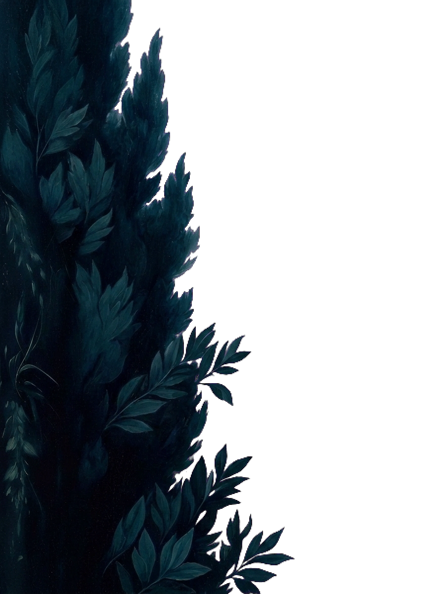
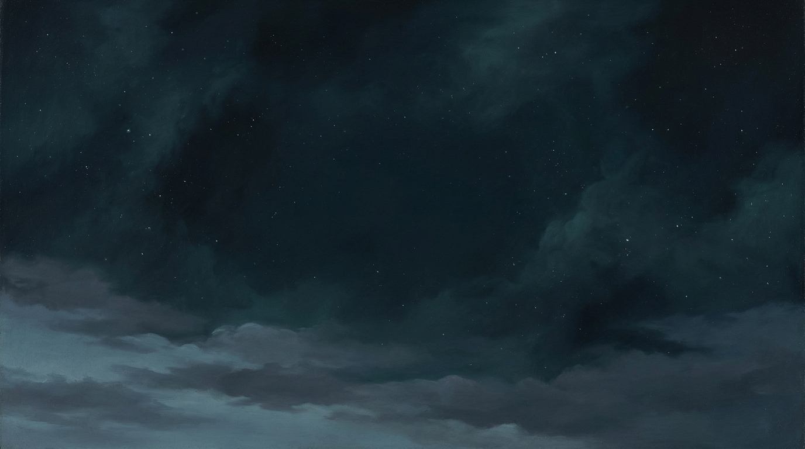

Gioconda
Act I revealed through the fractured Da Vinci grid — five separated depth planes where Tuscan wind ripples her silk veil and her hand tunes the marble-seated console.
Autonomous living study — wind cadence and console signal animate silently

Unleash the orbit
Alive in stillness
From outer-space throw to five quiet loggia planes
As the tossed anodized laptop squares up to fill the viewport, its silver bezel dissolves and the canvas fractures along Da Vinci golden-ratio gridlines into luminous oil-painted mosaic tiles with violet-pink pixel sparks — yielding directly to a five-plane Florentine loggia where valley gusts ripple her translucent veil and her hand tunes the marble-seated console.
Read two-act colophon
Harmony, choreographed
Colophon & Two-Act Stage Record
V3.2 Portrait Grammar · Native WebGL 3D · Mosaic Shader → Act IAct 0 · Orbit (V3.2 Outer-Space Prologue)
Built purely from our V3.2 eight-chapter Renaissance portrait grammar: a sixteenth-century short-curly-haired European woman in luminous lead-white linen robes and matte vintage crimson high-top canvas sneakers floating against cool twilight-to-nebula darkness, driven by a continuous 28×36 WebGL skinning rig (blinking, ankle kickflip pop, back-arch stretch, billowing drapery, floating iced-Americano cubes, fingertip push, and deep-space Z recession) paired with native zero-dependency WebGL 3D models for both the 78-key aluminum laptop and the 360° kickflipping violet-wheeled skateboard.
Prop-Removal Museum Test PASS · ≥45% Figure-Ground Contrast · Native WebGL 3D & GLSL Mosaic Shader
Act I · Gioconda (5-Plane Living Loggia)
Registered 1:1 directly behind the Da Vinci golden-ratio mosaic shatter shader so every glowing violet-pink pixel rift opens straight onto the live five-plane Florentine loggia, Canvas 2D living portrait expressions, and tactile hand-to-dial console tuning in pure silence. The original standalone single-act edition remains preserved intact at Single-Act Original.
Measured 5-Layer Composite · Shadow hue mean 192.9° · 13.9% rail · #dcded1 ground · #f7f7ee paper
Z-Depth Recession
360° 3D Skateboard
RGB Split + Pixels
Single-Act Original